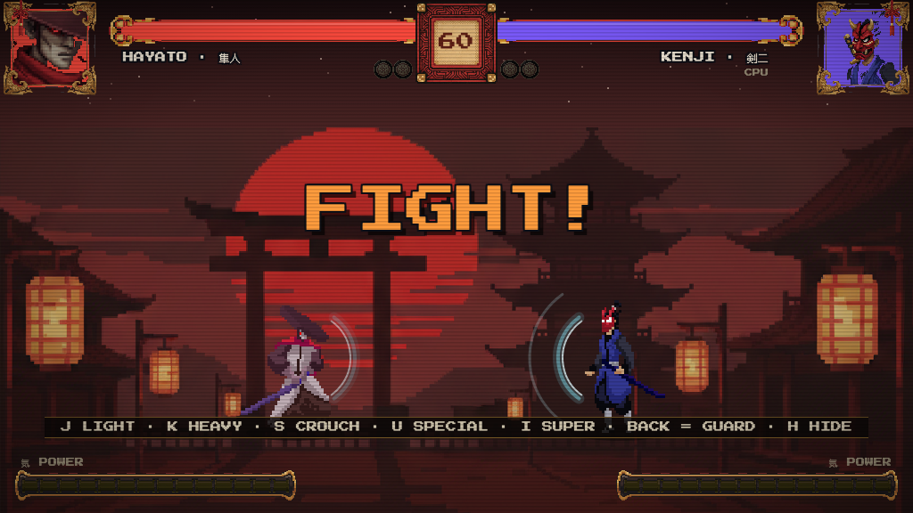
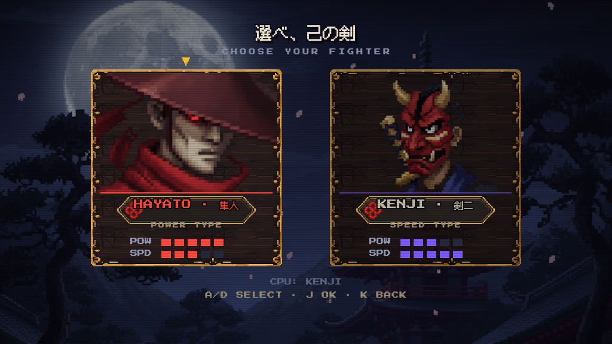
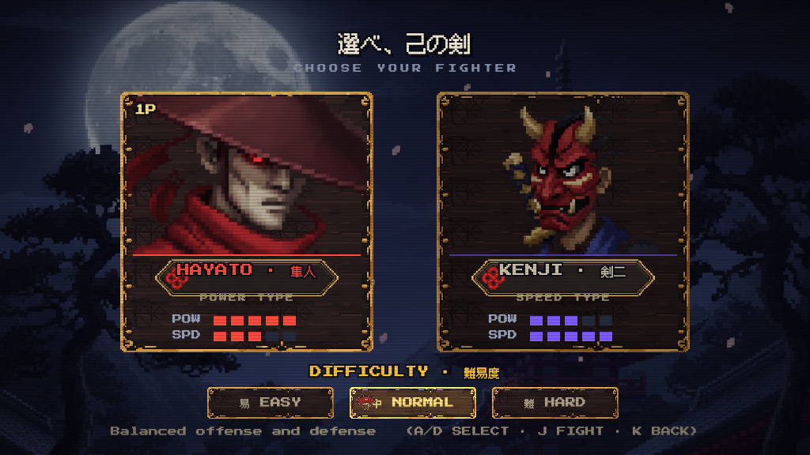
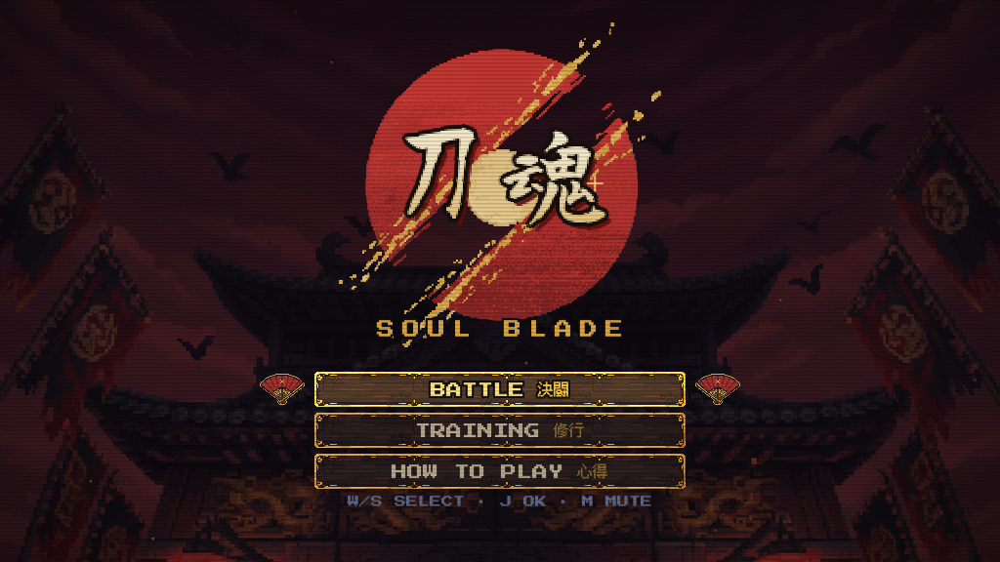
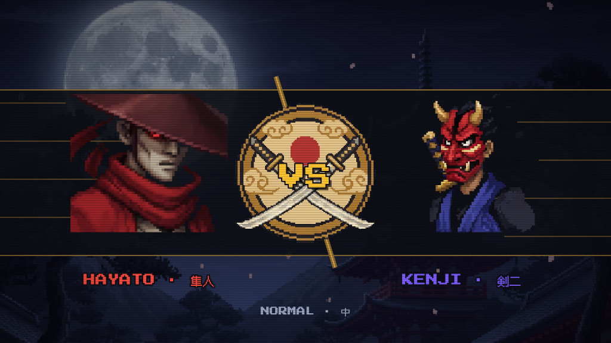

| 项 | 内容 | 状态 |
|---|---|---|
| B | 防御冲击波：蓝色矩形 → 半月弧形气浪（外晕/主弧/内亮边三层，朝对手鼓出；格挡瞬间外扩涟漪，持盾预备态为微光呼吸）。fighter.js 尾部纯视觉 ~20 行 | ✅ 图1 |
| C | 选人屏月夜专属背景设为默认（?selbg=dusk 可切回黄昏） | ✅ 图2 |
| D | 屏幕切换墨色淡入（18 tick 墨幕揭起；截图管线的 ff 快进会自动跳过，故无法截到，进游戏切屏即见） | ✅ 实机看 |
| E | 难度选择折扇光标（图3）· 标题 logo 偶发金光闪烁（图4，魂字右上）· VS 过场斜切分割线+速度线（图5） | ✅ |




